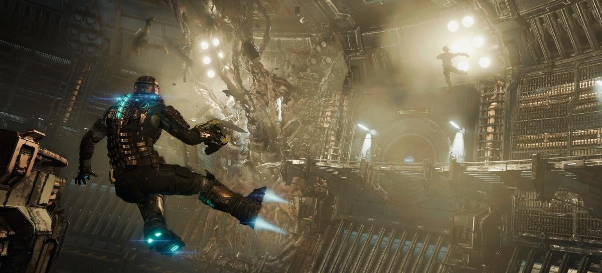
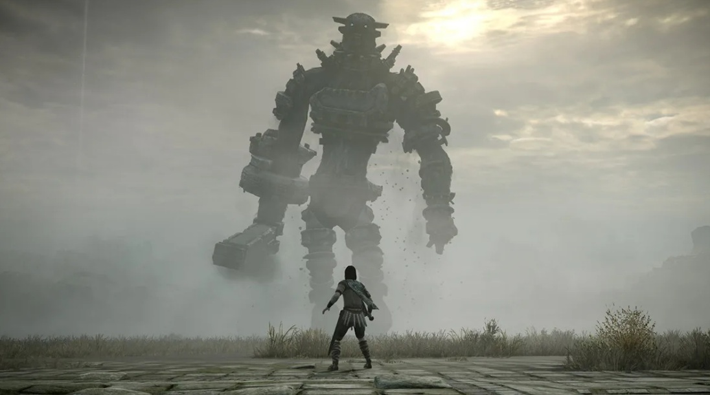

Dead Space Remake: confira os primeiros minutos do game

Do mesmo criador de The Callisto Protocol, Glen Schofield, Dead Space retorna com o remake que chega em janeiro, mas sem a participação de seu criador.
Dead Space Remake chega no dia 27 de janeiro de 2023 para PC, PS5 e Xbox Series X|S. Quem fizer a pré-compra do jogo, receberá também uma cópia de Dead Space 2 na data de lançamento do remake.
A nova criação de Glen Schofield, The Callisto Protocol, teve uma chegada complicada, sendo recebido com notas baixas e queda nas ações de sua publicadora, Krafton, Inc. Os próprios desenvolvedores disseram que não tem medo da comparação de seu novo jogo com Dead Space.Dead Space, o clássico de terror de sobrevivência e ficção científica, está de volta totalmente reformulado para oferecer uma experiência mais profunda e imersiva. O remake tem uma fidelidade visual impressionante, áudio atmosférico e aprimoramentos na jogabilidade, ao mesmo tempo em que se mantém fiel à emocionante visão do jogo original."
O REMAKE DE SHADOW OF THE COLOSSUS É TÃO EXCEPCIONAL QUÃO O ORIGINAL!!

Desenvolvido pela Bluepoint Games e lançado em fevereiro de 2018, o jogo foi feito com um respeito incrível pelo original, de 2005, e é possível ver isso em cada frame da obra.
Shadow of The Colossus é um daqueles jogo que marcam a gente, e nos deixam maravilhado pela forma como todos os detalhes são trabalhados, desde a crina do cavalo balançando ao vento à forma como o sistema de física do jogo era tão realista a ponto de dar raiva, sendo engraçado quando às vezes o personagem tropeçava enquanto corria, e enfurecedor quando ele fazia isso no meio de uma luta. Lutas que eram uma das coisas mais impressionantes no jogo. Eram bem poucas quando comparadas à outros jogos da época (16, para ser mais exato), mas cada uma delas é tão memorável ao ponto de eu ser capaz de descrevê-las em detalhe, mesmo após ter passado mais de dez anos desde a primeira vivência jogando.
Recordando muitas coisas do jogo original, mais coisas do que eu jamais achei que lembraria: da forma como eu matei o primeiro colosso, e como eu me senti terrível depois, até como eu chorei de culpa e não toquei no jogo por meses (eu era criança, não me julgue), e como no final eu voltei pra ele e joguei até o final, porque mesmo me sentindo um pouco mal por matar os colossos, era um crime maior deixar um jogo daqueles passar.
Este, é um jogo que precisa ser experimentado em primeira mão, pra que se possa ficar embasbacado com os detalhes, a música e até a forma como o jogo te deixa engajado em seu roteiro e personagens, mesmo quase não tendo diálogo, ou como ele te faz sentir pelos colossos, te fazendo pensar duas vezes se quer mesmo fazer aquilo